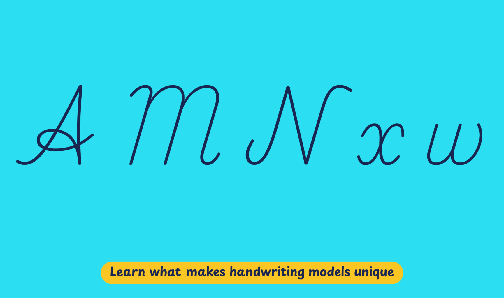

The primary school curriculum, published by the Ministry of Education, Science and Technology, and the Tanzania Institute of Education (TIE), was last updated in 2015. The first section, centered on the first two years of primary education (Standards 1 and 2) focuses on developing competencies in reading, writing and arithmetic. The TIE also publishes a syllabus that provides specific guidelines for the implementation of the curriculum. The syllabus states that students should learn print style letters first followed by cursive writing, but no models or samples are shown.
In practice, Standard 1 students learn an almost upright precursive and progress to a fully-joined cursive from Standard 2 onwards. The primers available through the free online library services supply detailed samples and practice materials that are used in classrooms.
Playwrite Tanzania is a variable font with a weight range from Thin (100) to Regular (400), and supports over 150 Latin-based languages.
To contribute, see github.com/TypeTogether/Playwrite.
This sloped continuous cursive style includes decorative capital letters. 'A' and 'H' feature looped crossbars, while 'G' has a cursive structure but lacks a descending stroke. 'M' and 'N' are constructed differently, with only one following a cursive format. The lowercase letters have looped ascenders and descenders. Curved entry strokes appear in 'm', 'n', and 'v', but are absent in 'w'. The letter 'q' includes a mirrored loop in its descender.

Playwrite Tanzania appears in font menus with a two-letter country code ‘TZ’,
Playwrite TZ, and features four styles: Thin, ExtraLight, Light, and
Regular.
The download .zip file includes the variable font and standard static ttf fonts
for each style.
The Playwrite school fonts are based on the findings of Primarium, a groundbreaking educational effort that documents the history and current practice of handwriting models taught to primary school students worldwide. This typographic engine serves teachers, educators, and parents by generating localized libre fonts. These Playwrite fonts are complemented by Playpen Sans, an informal and fun typeface designed for annotations, instructions, and student notes – that also includes emojis.
For more information about the Primarium project, visit primarium.info and to learn more about handwriting education in Tanzania, see primarium.info/countries/tanzania.
Windows: Download the font file to your computer. Navigate to where you saved the font file and double-click it to open. Click the "Install" button at the top of the font preview window. The font is now installed and ready to be used across your apps.
macOS: After downloading the font file to your Mac, right-click it in Finder and select "Open With" > "Font Book". Then, click "Install Font" in the font preview window that pops up. The font is now installed and ready to be used across your apps.
The Playwrite font family uses complex OpenType features to generate connected writing. Some common applications require these features to be manually activated.
Note: This font family doesn't include Bold or Italic styles, so please avoid applying them in text editors. If you use the common 'B' and 'I' buttons, you will automatically generate low-quality styles.
Google Docs and Slides: From the font selector drop-down, go to "More Fonts" and search for the desired font name, in this case, "Playwrite TZ", and click OK. If some text is already selected, the font choice will apply.
Microsoft Word: Go to Format in the Menu bar, select Font, and then the Advanced tab. Activate "Contextual Alternates" and "Kerning for fonts below" to apply these settings to all text sizes.
LibreOffice: In macOS, to select the different styles, go to Format in the Menu bar, select Character, and use the Typeface menu.
Adobe InDesign: Open the Paragraph Panel and select Adobe "World-Ready Paragraph Composer" from the contextual menu.
Adobe Illustrator: Navigate to Preferences > Type, check the "Show Indic Options" box, and close preferences. Then open the Paragraph Panel and select "Middle Eastern Composer" from the contextual menu.
Adobe Photoshop: Access the Paragraph Panel, then choose "World-Ready Layout" from the contextual menu.
The above instructions are also available in PDF format here.